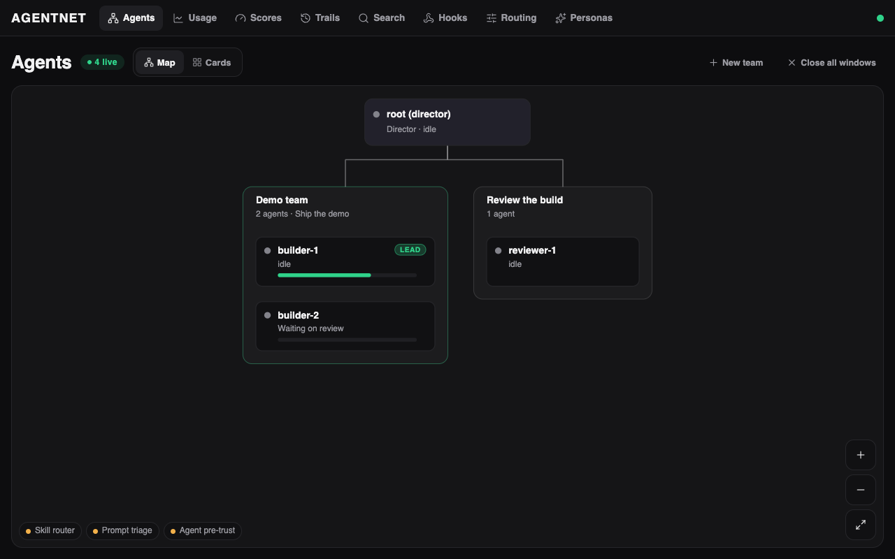

An org chart for your Claude Code agents
Name them. Give them a boss. Watch them work.
agentnet gives every Claude Code session a name, a boss, a task list and an inbox, and shows the whole team live on your own machine.

The problem
- You tab through ten terminals to find the one that is stuck.
- You copy what one session said into the next by hand.
- A fresh session repeats a choice the last one already made.
What you get
-
Know who is stuck
A live map of every agent's state, progress and task list.
Live map and task lists
-
Stop being the message bus
Agents message each other and report to their boss.
Inbox and reports
-
Keep what the last agent decided
Decision notes the next agent can search.
Decision notes (trails)
Local only. No login. Refuses to listen on a public address.
How it works
You need Claude Code, tmux and Bun, on macOS or Linux. Start from source:
git clone https://github.com/umuryavuz96/agentnet && cd agentnet
bun install
bun run web:buildThen start the server, spawn your first agent and open the web app. All steps
agentnet starts real Claude Code sessions, so every agent uses your Claude Code usage. The web app shows what each one used.
Security
- Listens on
127.0.0.1, so only your machine can reach it. - One LAN or tailnet address is opt-in. Public addresses are refused.
- There is no login, so never expose it to the internet.
- Only the machine itself or the root agent can start and stop agents.
- Agent tokens are identity, not a login, kept in a file only you can read.
Questions
Why not Claude Code subagents or agent teams?
Subagents and agent teams live inside one Claude Code session. agentnet is the layer outside it: names, inboxes, tasks and decision notes across sessions, so it complements them.
Is it safe?
It listens on 127.0.0.1 and refuses public addresses. There is no login, so never put it on the internet.
Does it cost extra?
agentnet starts real Claude Code sessions, so every agent uses your Claude Code usage. The web app shows what each one used.
Does it run on Windows?
No. agentnet runs on macOS and Linux.
Do I need Server OS?
No. agentnet works on its own. Support for showing it inside Server OS is coming in a later release.
Start your first agent
There is no agent loop to write; the agents are real Claude Code sessions.
git clone https://github.com/umuryavuz96/agentnet && cd agentnet
bun install
bun run web:buildAll steps · Homebrew and a signed installer are coming.